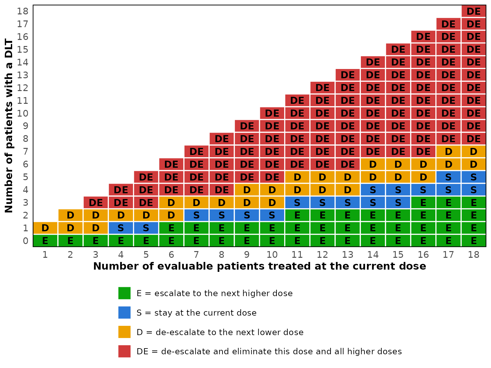
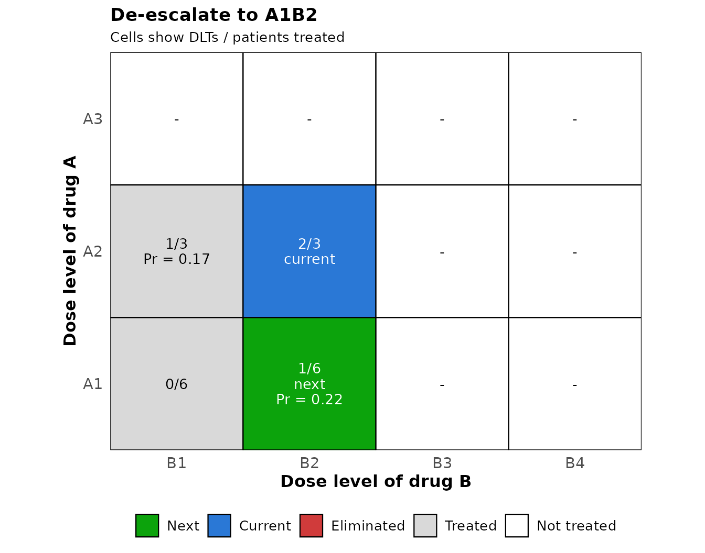

Drug-combination trials with the BOIN design
Source:vignettes/simFastBOIN-combination.Rmd
simFastBOIN-combination.RmdThe design
When two drugs are given together, the doses form a matrix, with the levels of drug A in the rows and those of drug B in the columns. Toxicity increases along every row and every column, but two combinations such as A3B1 (level 3 of drug A with level 1 of drug B) and A1B3 cannot be ordered in advance, so the next cohort may go in more than one direction. The BOIN drug-combination design of Lin and Yin (2017) keeps the decision rule of the single-agent design and adds a rule for the direction.
After each cohort, the observed DLT rate at the current combination
is compared with the boundaries lambda_e and
lambda_d of the single-agent design. When it calls for
escalation, the next cohort goes one level up of drug A or of drug B;
when it calls for de-escalation, one level down. Between the two
candidates the design takes the one more likely to be near the target,
the one with the larger posterior probability that its DLT rate lies
between lambda_e and lambda_d. A combination
judged too toxic is eliminated together with every combination that has
at least the same level of both drugs, and the trial stops when the
lowest combination is eliminated. At the end, the DLT rates are smoothed
by bivariate isotonic regression, so that they increase along every row
and column, and the combination closest to the target is the MTD.
The package follows the implementation in the BOIN package,
BOIN::get.oc.comb() with mtd.contour = FALSE,
so that the two can be compared trial by trial. That implementation adds
a few details to the article: a candidate’s posterior probability is
increased by 0.0005 for every patient already treated there, so that
ties go to the better informed combination; the trial can stop at
n_earlystop; and the MTD is selected from the estimates
(y + 0.05) / (n + 0.1), with ties broken in favor of lower
combinations.
An example
The example of Yan et al. (2020) has three levels of drug A, four of drug B and a target DLT rate of 0.25. Two combinations, A2B2 and A3B1, have a true DLT rate of exactly 0.25.
p_true <- matrix(c(0.02, 0.04, 0.08, 0.14,
0.08, 0.25, 0.42, 0.48,
0.25, 0.45, 0.50, 0.60), nrow = 3, byrow = TRUE)
oc <- sim_comb_boin(
target = 0.25,
p_true = p_true,
n_cohort = 16,
cohort_size = 3,
n_earlystop = 100,
n_trials = 1000,
seed = 6
)
oc
#> BOIN drug-combination operating characteristics
#> target DLT rate : 0.25
#> dose levels : 3 of drug A, 4 of drug B
#> trials : 1000
#> cohorts : 16 of size 3
#> max sample size : 48
#> lambda_e / _d : 0.1968 / 0.2984
#>
#> Item Drug A B1 B2 B3 B4
#> True DLT rate (%) A1 2.0 4.0 8.0 14.0
#> A2 8.0 25.0 42.0 48.0
#> A3 25.0 45.0 50.0 60.0
#> MTD selected (%) A1 0.0 1.1 2.8 19.8
#> A2 4.3 37.6 7.1 1.4
#> A3 21.8 3.9 0.2 0.0
#> Patients treated A1 4.1 3.7 3.2 4.2
#> A2 6.1 10.0 4.2 1.9
#> A3 5.9 3.6 0.8 0.3
#> Patients with DLT A1 0.1 0.1 0.2 0.6
#> A2 0.5 2.6 1.8 0.9
#> A3 1.5 1.6 0.4 0.2
#>
#> No MTD selected : 0%
#> Average number of patients : 48
#> Average number of DLTs : 10.5
#>
#> True MTD (closest to the target) : A3B1, A2B2
#> Selected as the MTD : 59.4%
#> Patients treated there : 33.1%
#>
#> Combinations above a true DLT rate of 0.25: 5 of 12
#> Patients treated there : 22.6%
#> Trials treating any patient there : 83.9%
#> Trials treating over 60% there : 5.1%
#> Trials treating over 80% there : 0.5%
#> Trials selecting an MTD there : 12.6%These are the settings of the article: 16 cohorts of three, early
stopping switched off with n_earlystop = 100, 1,000 trials
and the seed 6, which is the default of
BOIN::get.oc.comb(). One of the two MTD combinations is
selected in 59.4% of the trials, and 33.1% of the patients are treated
at one of them, the figures printed in the article. The package’s tests
check every number of that output to the printed precision. The average
number of patients at A2B4 is exactly 1.905, half-way between two
printed values, and the article prints it as 1.90 whereas R 4.6.0 prints
1.91; how such a value is rounded depends on the version of R.
The default n_earlystop of the package is 18, as for the
single-agent design, whereas BOIN::get.oc.comb() defaults
to 100. Set it explicitly when comparing the two.
Comparing scenarios
sim_comb_boin_multi() runs the same design under several
matrices of true DLT rates and collects the main results in one row per
scenario. Here are four of the ten scenarios of Lin and Yin (2017), with
three levels of agent 2 in the rows and five of agent 1 in the columns,
a target of 0.3 and 20 cohorts of three.
scenarios <- list(
"Scenario 1" = matrix(c(0.05, 0.10, 0.15, 0.30, 0.45,
0.10, 0.15, 0.30, 0.45, 0.55,
0.15, 0.30, 0.45, 0.50, 0.60), nrow = 3, byrow = TRUE),
"Scenario 4" = matrix(c(0.30, 0.45, 0.60, 0.70, 0.80,
0.45, 0.55, 0.65, 0.75, 0.85,
0.50, 0.60, 0.70, 0.80, 0.90), nrow = 3, byrow = TRUE),
"Scenario 8" = matrix(c(0.02, 0.10, 0.15, 0.50, 0.60,
0.05, 0.12, 0.30, 0.55, 0.70,
0.08, 0.15, 0.45, 0.60, 0.80), nrow = 3, byrow = TRUE),
"Scenario 10" = matrix(c(0.05, 0.10, 0.15, 0.30, 0.45,
0.45, 0.50, 0.60, 0.65, 0.70,
0.70, 0.75, 0.80, 0.85, 0.90), nrow = 3, byrow = TRUE)
)
multi <- sim_comb_boin_multi(
target = 0.30,
scenarios = scenarios,
n_cohort = 20,
cohort_size = 3,
n_earlystop = 100,
n_trials = 2000,
seed = 123
)
multi
#> BOIN drug-combination operating characteristics across 4 scenarios
#> target DLT rate : 0.3
#> dose levels : 3 of drug A, 5 of drug B
#> trials each : 2000
#> max sample size : 60
#> overdose cutoff : 0.3
#>
#> Scenario True MTD MTD selected (%) Patients at MTD (%) No MTD (%)
#> Scenario 1 A3B2, A2B3, A1B4 70.9 43.2 0.0
#> Scenario 4 A1B1 61.8 67.3 21.4
#> Scenario 8 A2B3 35.4 20.4 0.0
#> Scenario 10 A1B4 44.0 20.0 0.0
#> Above cutoff selected (%) Patients above cutoff (%) Patients DLTs
#> 16.0 19.9 60 16.0
#> 16.8 32.7 51 18.1
#> 20.9 26.4 60 15.2
#> 30.0 38.6 60 17.3“True MTD” lists the combinations closest to the target, “MTD
selected” the percentage of trials that select one of them and “Patients
at MTD” the percentage of patients treated there. The full results of a
scenario, with the selection percentage of every combination, are an
element of multi$results.
multi$results[["Scenario 10"]]$sel_percent
#> B1 B2 B3 B4 B5
#> A1 2.25 3.85 19.9 43.95 10.95
#> A2 16.30 2.40 0.3 0.10 0.00
#> A3 0.00 0.00 0.0 0.00 0.00In scenario 4 the lowest combination is itself the MTD, and 21.4% of
the trials stop because it is eliminated. The script
inst/validation/compare-with-LinYin2017.R compares these
and the other scenarios with the tables of the article.
Design options
The options of the single-agent design carry over:
titration treats one patient per combination, moving up one
level of either drug at random, until the first DLT;
extrasafe adds a stricter stopping rule at the lowest
combination; bound_mtd refuses an MTD whose estimate
reaches the de-escalation boundary; and start_dose gives
the levels of the two drugs for the first cohort.
With titration, the patients treated before the first DLT come on top of the planned cohorts, as in the BOIN package: the first full cohort only tops up the combination that titration reached.
The decision table for the protocol
At the current combination the rule is that of the single-agent
design, so the decision table of boin_decision_table()
serves a drug-combination protocol as it is. Only the direction of a
move is new, and it is decided from the data when the move is made.
decisions <- boin_decision_table(target = 0.25, max_n = 18)
print(decisions, cohort_size = 3)
#> Patients
#> DLTs 3 6 9 12 15 18
#> 0 E E E E E E
#> 1 D E E E E E
#> 2 D D S E E E
#> 3 DE D D S S E
#> 4 DE D D S S
#> 5 DE DE D D S
#> 6 DE DE DE D D
#> 7 DE DE DE D
#> 8 DE DE DE DE
#> 9 DE DE DE DE
#> 10 DE DE DE
#> 11 DE DE DE
#> 12 DE DE DE
#> 13 DE DE
#> 14 DE DE
#> 15 DE DE
#> 16 DE
#> 17 DE
#> 18 DE
#>
#> E = escalate, S = stay, D = de-escalate, DE = de-escalate and eliminate this dose and above
plot(decisions)
An escalation “E” moves one level up of drug A or of drug B, and a
de-escalation “D” one level down. “DE” eliminates the current
combination together with every combination that has at least the same
level of both drugs, and de-escalates; at the lowest combination it
stops the trial. Once n_earlystop patients have been
treated at the current combination, the trial stops unless the table
calls for a move that can be made.
Running the trial
comb_boin_next() takes the numbers of patients and DLTs
observed so far at every combination and the combination that treated
the last cohort, and returns the combination for the next cohort. It
applies the rules of the simulations, so the trial is run with the rules
whose operating characteristics sim_comb_boin()
reports.
n_pts <- matrix(c(6, 6, 0, 0,
3, 3, 0, 0,
0, 0, 0, 0), nrow = 3, byrow = TRUE)
n_tox <- matrix(c(0, 1, 0, 0,
1, 2, 0, 0,
0, 0, 0, 0), nrow = 3, byrow = TRUE)
nxt <- comb_boin_next(target = 0.25, n_pts = n_pts, n_tox = n_tox,
current = c(2, 2))
nxt
#> BOIN drug-combination design: dose for the next cohort
#> target DLT rate : 0.25
#> current : A2B2, 2 DLTs out of 3 patients (0.667)
#> boundaries : escalate if DLTs <= 0, de-escalate if DLTs >= 1, eliminate if DLTs >= 3 (3 patients)
#>
#> Decision: de-escalate to A1B2
#>
#> Candidates (interval 0.1968 to 0.2984):
#> Direction Combination Patients DLTs Pr(in interval) Score Available
#> drug A A1B2 6 1 0.218 0.2211 yes
#> drug B A2B1 3 1 0.167 0.1687 yes
#>
#> Eliminated combinations: noneTwo of the three patients at A2B2 had a DLT, which reaches the
de-escalation boundary of 1 for three patients. The candidates are A1B2
and A2B1, and A1B2 has the larger posterior probability that its DLT
rate lies between lambda_e and lambda_d, 0.218
against 0.167, so it receives the next cohort. The figure shows the same
decision on the dose matrix.
plot(nxt)
When the two candidates have the same score, as at the start of a
trial where neither has been treated, the design chooses between them at
random; comb_boin_next() then returns both in
next_dose and leaves the choice to the user. When the trial
stops, decision is "stop" and
stop_reason says why. After a stop for
n_earlystop, or once the planned cohorts have been treated,
comb_boin_select_mtd() selects the MTD from the same two
matrices.
BOIN::next.comb(), the corresponding function of the
BOIN package, applies somewhat different rules from the simulations of
BOIN::get.oc.comb(): it stops as soon as
n.earlystop patients have been treated at the current
combination, it does not escalate drug A when a combination with the
next level of drug A and at most the current level of drug B has an
observed DLT rate at or above lambda_d (and likewise for
drug B), and it draws a random number to break ties.
comb_boin_next() follows the simulations instead. The tests
check that it takes the decisions of simulated trials cohort by cohort,
and that it agrees with BOIN::next.comb() wherever the
rules coincide.
Working with the trial data
comb_boin_simulate() returns the trials themselves, as
arrays with one row per trial, and comb_boin_select_mtd()
applies the selection rule to completed trials, or to the data of a
single trial given as two matrices.
trials <- comb_boin_simulate(
target = 0.25, p_true = p_true, n_cohort = 16, cohort_size = 3,
n_trials = 5, seed = 1
)
trials$n_pts[1, , ]
#> B1 B2 B3 B4
#> A1 3 6 6 18
#> A2 0 0 0 3
#> A3 0 0 0 0
trials$n_tox[1, , ]
#> B1 B2 B3 B4
#> A1 0 0 1 1
#> A2 0 0 0 3
#> A3 0 0 0 0
comb_boin_select_mtd(trials$n_pts[1, , ], trials$n_tox[1, , ], target = 0.25)
#> trial mtd_a mtd_b reason
#> 1 1 1 4 selectedThe bivariate isotonic regression is computed by
Iso::biviso(), the routine that the BOIN package calls.
This matters more than one might expect. Combinations that the
regression pools have equal estimates in exact arithmetic, but not
always in the last digits, and these digits decide between two
combinations on the same anti-diagonal. Another algorithm for the same
regression selects a different combination in a few trials out of a
thousand.
Agreement with the BOIN package
The engine draws one uniform variate per patient, in enrollment
order, one for the direction of every titration step that can go either
way, and one for every escalation or de-escalation that has a candidate.
This is the order of BOIN::get.oc.comb(), so with the same
seed and matching arguments the two implementations produce the same
trials. The tests check this for several settings whenever the BOIN
package is installed, and
inst/validation/compare-comb-with-BOIN.R runs the
comparison over a wider grid.
reference <- BOIN::get.oc.comb(
target = 0.25, p.true = p_true, ncohort = 16, cohortsize = 3,
n.earlystop = 18, ntrial = 1000, seed = 6
)
ours <- sim_comb_boin(
target = 0.25, p_true = p_true, n_cohort = 16, cohort_size = 3,
n_earlystop = 18, n_trials = 1000, seed = 6
)
all.equal(round(unname(ours$sel_percent), 2), unname(reference$selpercent))
all.equal(round(unname(ours$n_pts_dose), 2), unname(reference$npatients))The waterfall design of Zhang and Yuan (2016), which searches for the whole MTD contour rather than a single MTD, is not provided.
References
Lin, R. and Yin, G. (2017). Bayesian Optimal Interval Design for Dose Finding in Drug-Combination Trials. Statistical Methods in Medical Research, 26(5), 2155-2167.
Yan, F., Zhang, L., Zhou, Y., Pan, H., Liu, S. and Yuan, Y. (2020). BOIN: An R Package for Designing Single-Agent and Drug-Combination Dose-Finding Trials Using Bayesian Optimal Interval Designs. Journal of Statistical Software, 94(13), 1-32.
Zhang, L. and Yuan, Y. (2016). A Practical Bayesian Design to Identify the Maximum Tolerated Dose Contour for Drug Combination Trials. Statistics in Medicine, 35(27), 4924-4936.